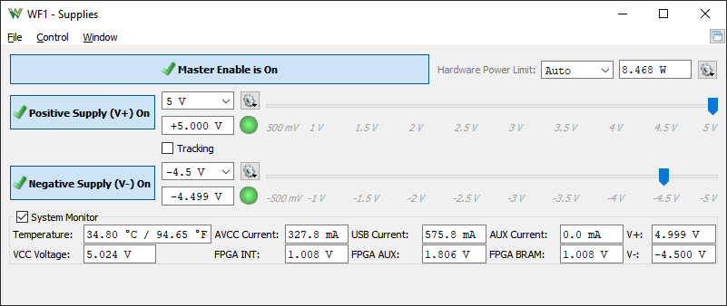

Power Supplies – ADP2230
This instrument allows you to enable and control the device power supplies. See Power Supplies for more information. These channels can also be controlled as slow signal generators from the Wavegen instrument.

- Master Enable is ON/OFF button: the master ON/OFF switch for the power supplies.
- Hardware Power Limit: specifies and shows the actual total power limit for the two supplies. The Auto option automatically sets the limit based on USB power delivery capability or the presence of an AUX supply. Setting a high limit and drawing more power than the USB hub can support, it may cause the device to disconnect or the port to be disabled.
- Transition: specifies the full scale, 5V transition time, voltage adjustment rate
- Positive/Negative Supply button: the enable switches for each supply.
- RDY is shown when the supply is enabled but the master switch is OFF.
- ON is shown when the master switch is on and the supply is also enabled.
- OFF is shown when the supply is not enabled.
- Voltage fields: let you adjust the values for the power supplies by either selecting a value from combo box, or typing it in, or adjusting with the slider. The gear drop down menu lets you adjust a minimum and a maximum value.
Below the adjustment fields, the voltage reading is shown.
- Tracking: let you select mirrored voltage adjustment on positive and negative channels.
- The System Monitor displays the condition of the device system.
See Menu in Common Interfaces.
For more information see ADP2230.